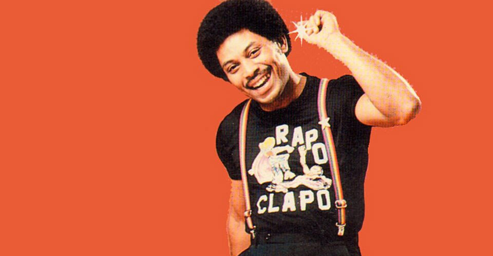

MUS 302 · What to Listen for in Music
Module 3: Latin Diasporic Traditions · Listening Guide · Track 2 of 5
Track 2 Joe Bataan, "Gypsy Woman" (1967)

Context
Bataan before the song: Spanish Harlem, the Dragons, Coxsackie, the Latin Swingers
Bataan Nitollano was born in on November 5, 1942, the son of a Filipino father from Manila and an African American mother from Newport News, Virginia. His father served in the US Navy and worked as a short-order cook; his mother did domestic work and organized neighborhood dances for which she charged admission. The family was a rarity in El Barrio in the 1940s and 50s, a mostly Puerto Rican neighborhood with smaller Black, Chinese, and Jewish communities. Bataan grew up speaking English at school and Spanish on the street, where most of his playmates were Puerto Rican. He sang on street corners as a teenager, idolized , and at fifteen was named the president of the , a Puerto Rican street gang in the neighborhood. Around the same age he was sent upstate to , the New York State reformatory for young men, on a stolen-car charge. He served roughly five years.
He came home in 1965, at twenty-three, with a different set of priorities. He taught himself the piano, recruited a band of neighborhood teenagers (most around eleven, twelve, and thirteen years old; Bataan himself was nineteen at the time he later told the Bronx African American History Project, perhaps a slight rounding-down), and named the group the . The legend, which Bataan has not denied, is that he formed the band by walking into a rehearsal of young musicians in his neighborhood, plunging a knife into the grand piano, and declaring himself the leader. The Latin Swingers played weddings and dances at venues like the in the Bronx and the Bronx's Colgate Gardens nightclub. By 1966, Bataan was being introduced from those stages, sometimes with the MC mistaking the name and announcing him as "Joe Batman."
What boogaloo was: the Palladium just closed, the kids took over
The musical world Bataan stepped into in 1965 and 1966 was the New York moment that the Track 1 listening guide ends on. The closed in 1966 after a police raid pulled its cabaret license; the Cuban-Puerto Rican orchestras that had defined Latin New York since the late 1940s lost their flagship venue and their flagship audience in the same year. What rushed in to fill the gap was something called : a deliberately bicultural music made by mostly Puerto Rican teenagers, sung in a mix of English and Spanish, with R&B and backbeats laid over Cuban rhythms. The 's "Bang Bang" became the genre's first big hit in 1966, selling around a million copies. 's "I Like It Like That" followed in 1967. Where the Palladium era's mambo had been the music of professional adult bandleaders, boogaloo was the music of high school kids: faster, looser, less expert, more direct, and openly aimed at the bilingual Black-and-Latin teenage audience that El Barrio and the had produced.
The older generation, the Palladium-era Latin establishment, mostly hated it. called the boogaloo bands musically inadequate. The director of the 2015 documentary We Like It Like That, Mathew Ramirez Warren, has described the establishment's reaction in plain terms: "You're bastardizing our sound, you're making it black." That Black-Latin fusion was exactly what the boogaloo generation thought they were doing on purpose. By 1969 the genre would be effectively over, killed off by the boom that orchestrated in the 1970s. But for a window of three or four years, boogaloo was the live music of the New York Latin teenager, and Bataan walked into it with exactly the right combination of street credibility, doo-wop training, and Latin rhythm-section instincts to ride the wave.
The recording: Mayfield rewritten, Pacheco producing, one day in the studio
Fania Records had been founded in 1964 by the Dominican-born flutist and the lawyer as an independent Latin label working out of New York. In 1966, Pacheco saw the Latin Swingers play at Colgate Gardens, decided Bataan was the band Fania wanted next, and worked out a deal with Al Santiago (whose Futura label had signed Bataan first) to bring the band over. Bataan recorded his debut album in a single day-long session, with Pacheco himself serving as the band's recording director. The personnel on the album: Bataan on piano, lead English vocals, and bandleader; Joe Pagan on lead Spanish vocals; Joe "Chickie" Fuente and Ruben Hernandez on ; Louis Devis on bass; Victor Gonzalez on ; Eddie Nater on ; Richie Cortez on bell. Most of the band were teenagers. The album was released on Fania's gold label in 1967, and it became one of the label's first significant successes.
The title track is built on a song that already had a recorded life. wrote "Gypsy Woman" as a teenager, and his Chicago vocal group recorded it in 1961 for ABC-Paramount Records. The Mayfield original is a slow, romantic ballad, with castanets and orchestral strings giving it what one writer has called a "Spanish flair" or a bachelor-pad-exotica quality, vocal harmonies sitting under Mayfield's high . It reached number 2 on the R&B chart and number 20 on the Billboard Hot 100. Bataan's recording of "Gypsy Woman" was billed as a cover, but the Pitchfork reviewer Oliver Wang has argued that it is something stranger: "Beyond an opening line that riffed on Curtis Mayfield's songwriting, Bataan changed everything else." The lyrics, the arrangement, the instrumentation, the tempo, the entire sonic world is rebuilt. "Whereas the Impressions' mellow original had more in common, aurally, with a bachelor pad exotica record, Bataan's song was ferociously uptempo and unmistakably Afro-Cuban, opening with a lively piano and background singers yelling, 'She smokes, hot hot, she smokes!'"
The recording is in the key of B-flat minor, the closest thing to a 1960s soul-record key signature. The is 4/4. The is around 136 , which is exactly the bright dance-floor tempo that the boogaloo era ran on, slightly faster than the range of Track 1. The full runtime is two minutes thirty-two seconds, which is to say a 1960s Top 40 single's length and not a New York Latin orchestra's six-minute extended dance arrangement. Bataan's band is also smaller than Puente's: nine musicians, not twenty, with two trombones in front instead of a four-saxophone-three-trumpet brass section.
Reception and afterlife: boogaloo dies, Bataan keeps moving
"Gypsy Woman" was a hit with the New York Latin market on release, despite (and partly because of) the English lyrics. Bataan recorded eight albums for Fania between 1967 and 1972, including the gold-selling Riot! in 1968, and was hailed by the industry as the King of . Then the genre that had carried him there evaporated. By the early 1970s, Fania Records (and Pacheco specifically, the man who had signed Bataan in the first place and produced this song) had pivoted toward salsa, the umbrella term for a more virtuoso, more aggressively Latin sound, mostly in Spanish, that the older generation of Cuban and Puerto Rican musicians had been making all along. Boogaloo was effectively cut off from the radio and the major venues. The conga player and Boogaloo great Nando, interviewed in We Like It Like That, has described the ending as a kind of industry-wide shutout: when the boogaloo bands tried to organize for better pay and top billing, "our records were no longer played over the radio." The musicology of the period treats this less as a natural fade and more as a deliberate suppression.
Bataan kept moving. He left Fania in 1973 over financial disagreements with Masucci, helped found (and gave the label its name, fusing salsa and soul), and recorded in disco and proto-rap idioms across the late 1970s. His 1979 single on Salsoul, recorded shortly after the Sugarhill Gang's "Rapper's Delight," is one of the earliest commercially released rap recordings, and one of the first to include rapping in Spanish. It hit the top ten in much of Europe but barely registered at home. In the 1980s Bataan stepped back from music to work as a youth counselor at the Bridges Juvenile Center in the Bronx, the same kind of facility where he had been an inmate as a teenager. He returned to recording in the 2000s and is still performing in his eighties as of this writing. Behind the long career sits the recording on this listening guide: an unknown twenty-five-year-old's first session, the Mayfield song he had built his live show around, in two minutes thirty-two seconds, on Fania's brand-new gold label.
Things to listen for
First, the timbre of Bataan's voice against the band. Bataan was a doo-wop singer before he was a Latin musician. He grew up listening to Frankie Lymon and the Teenagers' "Why Do Fools Fall in Love" on the radio, and it shows: his lead vocal on "Gypsy Woman" sits in a smooth tenor range, with a slight vibrato at the ends of phrases, the diction relaxed, the emotional register cool rather than hot. Compare it to the gospel-trained voice of Sam Cooke, who would have considered Bataan's vocal style technically modest. Bataan himself has been candid about this: "I wasn't the greatest singer but I had progressive ideas." What Bataan does have is the right voice for the music he is making. Behind him, the Latin Swingers play in a much rougher and more direct timbre than the orchestral world of the Track 1 Tito Puente recording: two unison trombones (Joe "Chickie" Fuente and Ruben Hernandez) carry most of the horn work, with no saxophones and no flute, and the trombones sound brassy, slightly sour, and explicitly young-band. The piano (played by Bataan himself) is mid-register and percussive, never decorative. Listen for how the textures of the lead voice and the band sit in different musical worlds. Bataan's vocal is doo-wop, the band is Latin dance, and the meeting between the two is what the song is.
Second, the texture, and specifically how the band layers a small number of strong elements. Where Tito Puente's "Oye Como Va" worked with twenty musicians in three layers (, brass, and lead flute and violin), Bataan's "Gypsy Woman" works with nine musicians in roughly four: the rhythm section (piano, bass, conga, timbales, bell), the two trombones, the lead vocal, and the chorus. There is no string section. There are no saxophones. Listen to how each element does distinct work, and listen specifically for the moments where the texture suddenly contracts or expands, when the trombones drop out so the chorus can take over, when the conga comes forward, when the handclaps enter. The producer Johnny Pacheco was working with a band that did not have the polish of an orchestra, and the texture is honest about that: the band sounds tight on what it has decided to do, less prepared on transitions, and the microphone places everyone close. Compare this to the much larger, more layered ensemble texture behind Celia Cruz in the Module 1 Quimbara recording: Fania at its full 1974 mature size against Fania at its 1967 startup size, eight years apart, on the same label.
Third, the form. The song alternates between two distinct moods that take turns. There are the verse passages, where Bataan sings the Mayfield-derived English lyric over a slower-feeling soul groove. And there are the boogaloo break passages, where the chorus shouts "she smokes hot, hot, she smokes," the handclaps come in on the , and the trombones push the band to double time. The Los Angeles Philharmonic biography of Bataan describes this structural alternation precisely: the recording "created dance energy by alternating what was fundamentally a pop-soul tune with a break featuring double-timed handclaps." That alternation is the song's central formal idea. It is a different formal architecture from the single-vamp form of Puente's "Oye Como Va", where the band stays in one groove for four and a half minutes. Bataan's "Gypsy Woman" is built on contrast: pop-soul verse, boogaloo break, pop-soul verse, boogaloo break. Listen for the moment the handclaps arrive. The handclap break is also where the song most clearly stops being a Mayfield cover and starts being a Latin soul recording.
Fourth, the bilingual moment, and what it does. Bataan's lead vocal is in English, taking its opening phrase from Mayfield's lyric ("From nowhere, through a caravan…"). The chorus interjections are in Spanish: "ella fuma hot, hot, ella fuma," which Bataan and his backing singers translate on the spot to "she smokes hot, hot, she smokes." The two languages live inside the same sixteen bars. This bilingual texture is the formal signature of boogaloo and Latin soul: a music that the bilingual bicultural audience of mid-1960s El Barrio and the South Bronx could hear and recognize as its own. The framing reading argued that form sometimes does political work: the very fact of a song that codeswitches between English and Spanish on a US dance-floor record was a way of insisting that the audience was real, that the bicultural condition of the New York Latin teenager was an actual American condition that deserved a music. Listen for where the codeswitch happens, listen for whether one language carries the verse content and the other carries the dance-floor shout, and ask whether that division of labor is doing anything specific. Then notice that the same Pacheco who produced this bilingual recording in 1967 would, by the early 1970s, be one of the architects of the Spanish-only salsa boom that pushed boogaloo and Latin soul off the radio.
Reflective question
Bataan was not Puerto Rican by parentage. His father was Filipino, his mother was African American, and his Spanish was learned on the street from Puerto Rican playmates rather than at home. And yet "Gypsy Woman," recorded by his band of teenage Puerto Rican musicians, in El Barrio's bilingual idiom, is one of the central documents of mid-1960s music. Pick one specific moment in the recording (an entrance, a vocal phrase, the handclap break, a trombone figure, the chorus interjection in Spanish) and argue from it about what the song is doing with cultural identity. The framing reading proposed that the categories the course uses (the four traditions; the labels Black, Latin, Asian American, white working-class) are useful but never the whole story. What does this recording, made by this particular musician with this particular band on this particular label, suggest about how those categories actually work in the lives and music of the people who made the categories real?
Sources for this section
Berríos-Miranda, Marisol; Dudley, Shannon; and Habell-Pallán, Michelle. American Sabor: Latinos and Latinas in US Popular Music. Seattle: University of Washington Press, 2017. Source for the bicultural Black-and-Latin framing of New York 1960s music and the institutional history of Fania Records.
Flores, Juan. From Bomba to Hip-Hop: Puerto Rican Culture and Latino Identity. New York: Columbia University Press, 2000. Foundational text on Nuyorican cultural production; source for the framing of the boogaloo / Latin soul moment as the music of the first New York-born Puerto Rican generation.
Wang, Oliver. "Joe Bataan: Gypsy Woman." Pitchfork, 2022. Source for the Mayfield-to-Bataan transformation analysis ("Beyond an opening line that riffed on Curtis Mayfield's songwriting, Bataan changed everything else") and the "ferociously uptempo and unmistakably Afro-Cuban" framing.
Bobby Marin. "Joe Bataan – Gypsy Woman." Fania Records Albums & Eras essay, 2021. Firsthand account of the 1966 Colgate Gardens performance where Pacheco saw the Latin Swingers, and of the deal that brought the album to Fania from Al Santiago's Futura label.
Naison, Mark, and Maxine Gordon. Interview with Joe Bataan. Bronx African American History Project, Fordham University, June 12, 2006. Source for the biographical details of Bataan's parents (Filipino father from Manila, African American mother from Newport News), the racially mixed family in 1940s and 50s Spanish Harlem, the Dragons gang presidency at fifteen, and the early career.
Bataan, Joe. Lecture at the Red Bull Music Academy, 2006. Source for the Frankie Lymon and Latin music influences, the Latin Swingers' formation, and Bataan's account of his bilingual neighborhood upbringing. Also source for the "Rap-O Clap-O" backstory and the suspenders-and-t-shirt costume that the hero photo on this page documents.
Ramirez Warren, Mathew, dir. We Like It Like That: The Story of Latin Boogaloo. Saboteur Media / Codigo Films, 2015. The standard documentary on the boogaloo era, drawing on extensive interviews with Bataan, Pete Rodriguez, Johnny Colon, Richie Ray, Larry Harlow, and others. Source for the "you're bastardizing our sound, you're making it black" framing of the establishment reaction and the documentary's account of how the salsa industry pushed boogaloo off the radio.
Salazar, Max. Mambo Kingdom: Latin Music in New York. New York: Schirmer Trade Books, 2002. Source for the Palladium closing in 1966 and the institutional handoff between the mambo era and what came after.
Wikipedia. "Joe Bataan." Heavily sourced biographical article; useful for cross-checking the Coxsackie service, the Latin Swingers' formation, the Fania discography, and the Salsoul / Rap-O Clap-O later trajectory.
Wikipedia. "Gypsy Woman (The Impressions song)." Source for the 1961 Mayfield original's recording (ABC-Paramount, October 1961), chart performance (No. 2 R&B, No. 20 Hot 100), and the cover version trail (Bataan 1967, Brian Hyland 1970, Santana 1990).
Craft Recordings. "Joe Bataan's Latin-Soul Classic Gypsy Woman Set for Remastered Vinyl Reissue." Press release, 2022. Source for the personnel, the Pacheco direction, and the recording history.